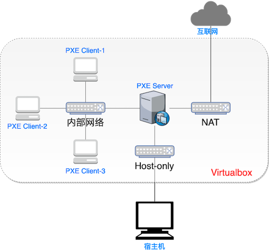
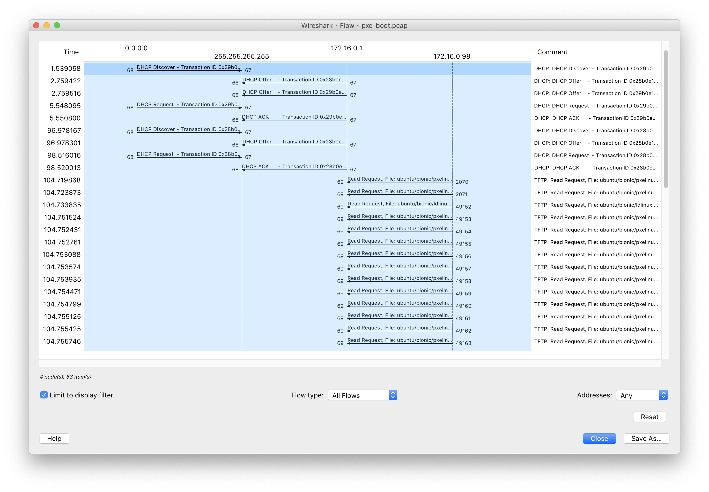
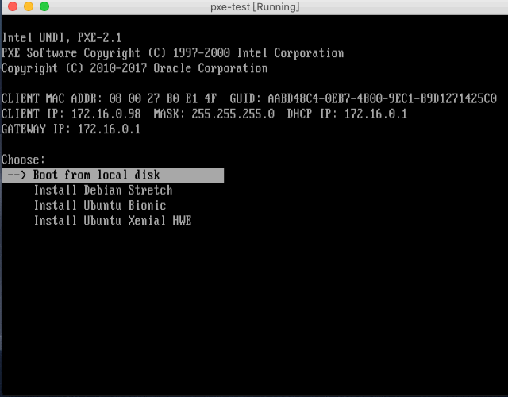

黄玮
给「成百上千」台裸机安装操作系统
PXE - Preboot eXecution Environment, 预启动执行环境
Intel公司提出的一种使用网络接口启动计算机的机制，能够代替本地数据存储设备（光盘、硬盘、USB设备）进行安装操作系统。
目前，PXE 启动已成为一种固件标准，大部分服务器BIOS都支持PXE启动，特别适合大规模集群批量、自动化、无人值守方式安装操作系统。
pxelinux.0，Windows 使用 PE 系统pxelinux.cfg/default）initrd.gz）preseed.cfg），并通过网络服务（NFS / FTP / HTTP）获得系统所需安装文件，按照自动安装脚本的配置进行安装
preseed.cfg 下载，本例子中由 apache2 提供）c4pr1c3/AnsibleTutorial/pxeboot on Github

pxelinux.0 ）pxelinux.0），目标主机执行下载的镜像启动系统默认情况下，PXE 客户端 在 TFP 服务器 的 pxelinux.cfg 子目录下 按以下优先级次序 搜索 镜像启动配置文件：
PXE 客户端 所在主机的唯一标识 GUID
aabd48c4-0eb7-4b00-9ec1-b9d1271425c0PXE 客户端 发起 DHCP 请求所使用网卡的 MAC 地址
01-08-00-27-b0-e1-4fPXE 客户端 通过 DHCP 响应获得到的 IP 地址 （转换成 16 进制大写字母表示后，从右向左依次查询匹配）
AC100062, AC10006, AC1000, AC100, AC10, AC1, AC, AdefaultIPv4 地址转换成 16 进制大写字母表示
IP="172.16.0.98"
printf '%02X' ${IP//./ }; echo
# AC100062 
preseed 技术）继续通过 网络 在线安装完整操作系统